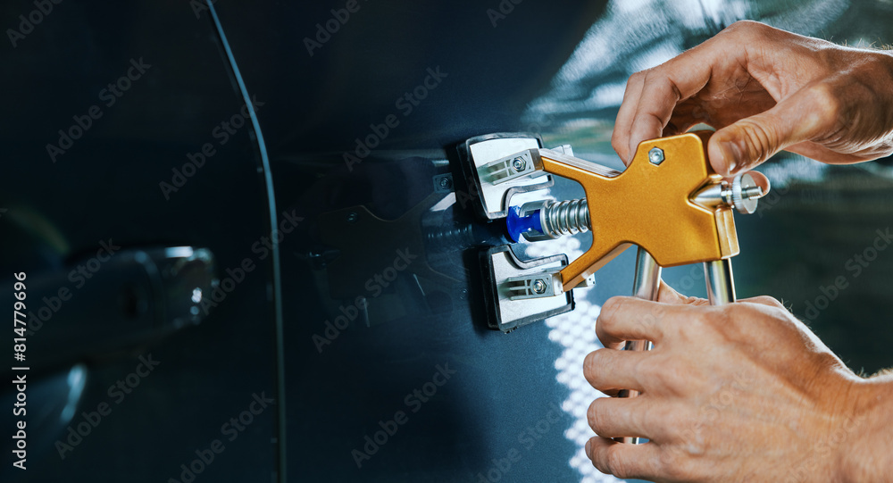

Whether it’s pesky hail damage or just a small door ding, our experienced Paintless Dent Repair (PDR) technician can get most of them out. Our technician will access the damage from behind the panel using a series of rods and techniques to essentially “massage” out the dent and dependent on the extent of the damage this could save hundreds to thousands of dollars in unneeded repairs. When you work with Rydell Auto Body and Glass we will make sure we give you the best option and most PDR services can be done within a day and can be scheduled at your convenience.

Reliable Paintless Dent Removal in Grand Forks
Rydell Collision Center uses the latest PDR tools and technology. Here are some things to keep in mind when considering paintless dent removal as an option:
- Most small dents can be removed using Paintless Dent Removal.
- The original paint needs to be intact, not cracked.
- Edges are sometimes possible.
- All makes and models are paintless dent removal candidates; however, access may vary among different automobile manufacturers, which would not allow some dents or dings to be repaired using the Paintless Dent Removal technique.
- Other items that would not allow PDR to be a viable repair method would be sharp edges or creases, body lines, structural or double wall metals and missing or cracked paint surfaces.
In those cases where PDR will not work, we would be happy to provide a competitive estimate using conventional body repair methods.

Some of the major benefits of paintless dent repair in Grand Forks are that it’s more affordable, less time consuming, and it maintains the integrity of the design better than traditional body work. That means more money in your pocket and less time with your car in the shop.
If you have any questions, please stop in and let us take a look at your vehicle and allow us to provide the best options available for your auto repair in Grand Forks. Make an appointment with the Grand Forks dent removal experts today by giving us a call at 701-792-2846.
Rydell Collision Center
1502 28th Ave S
Grand Forks, ND 58201
Call 701-792-2846
More on the original Rydell page: Paintless dent removal at Rydell Cars